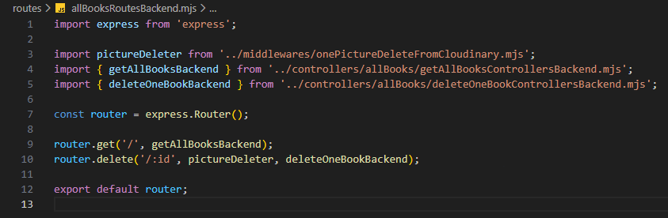

Összes könyv kezelése - allBooksRoutesBackend.mjs
Összes könyv kezelése - allBooksRoutesBackend.mjs

Ebben a részben szerkesztjük a routes mappában a allBooksRoutesBackend.mjs állományt, amelyben összesítjük a CRUD műveletekhez tartozó logikákat.
-
Szerkesszük a
allBooksRoutesBackend.mjsállományunkat.-
import express from 'express';- azexpressnpmcsomag beimportálása. -
import pictureDeleter from '../middlewares/onePictureToCloudinary.mjs'- apictureDeleterfüggvény alapértelmezett importja. -
import { getAllBooksBackend } from '../controllers/allBooks/getAllBooksControllersBackend.mjs';- agetAllBooksBackendfüggvény nevesített importja. -
import { deleteOneBookBackend } from '../controllers/allBooks/deleteOneBookControllersBackend.mjs';- adeleteOneBookBackendfüggvény nevesített importja. -
const router = express.Router();- mivel a webszerver jelölésére azappcsak aserver.mjsállományban használható, ezért itt már csak arouterszóval hivatkozhatunk rá, amit azexpressobjektumRouter()függvényével tehetünk meg. -
router.get('/', getAllBooksBackend);- ahttp GET metódus-hoz tartozó logika hívása agetAllBooksBackendfüggvény segítségével. -
router.delete('/:id', pictureDeleter, deleteOneBookBackend);- ahttp DELETE metódus-hoz tartozó logika hívása apictureDeletermiddlewareés adeleteOneBookBackendfüggvény segítségével. -
export default router;- a szerver hívás alapértelmezett kivitele.
-